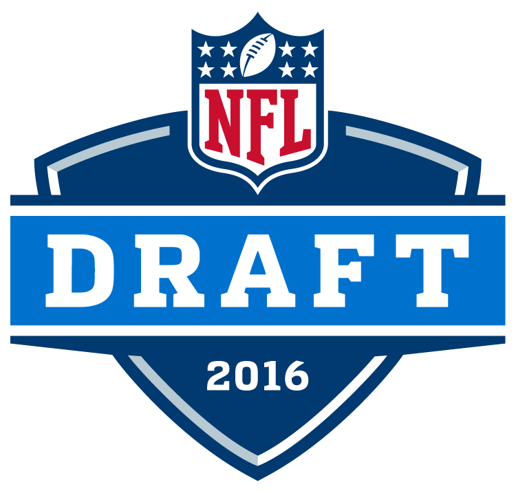

- Round 1, pick No. 4: Ezekiel Elliott, RB, Ohio State
- Round 2, pick No. 34: Jaylon Smith, OLB, Notre Dame
- Round 3, pick No. 34: Maliek Collins, DT, Nebraska

- Round 1, Pick No. 10: Eli Apple, CB, Ohio State
- Round 2, Pick No. 40: Sterling Shepard, WR, Oklahoma
- Round 3, Pick No. 71: Darian Thompson, S, Boise State